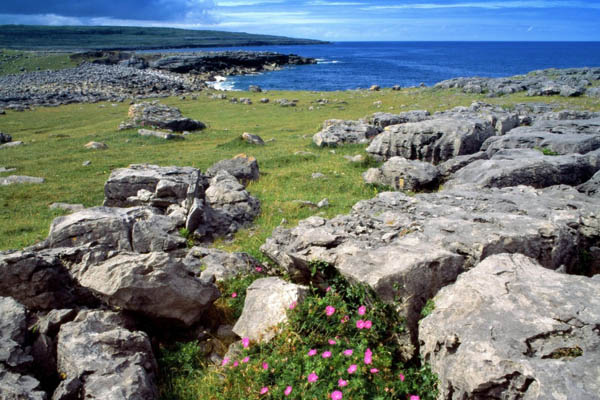
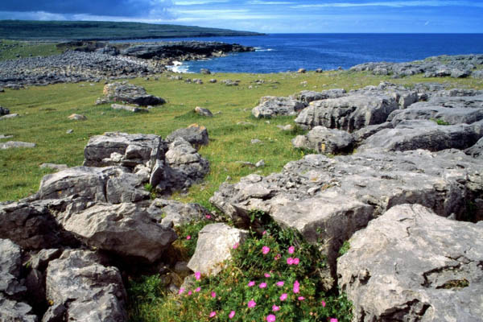

With evening stretching to as late as 10.30pm, summer days give tourists plenty of time to absorb the amazing scenery Ireland has to offer. Touring around the west coast is best done during the summer months, as the atlantic coast gets the worst of the rain and winds during the other seasons. Stop along the way to see the Cliffs of Moher, The Burren, Benbulben Mountains and the Aran Islands.

Cliffs of Moher
The Cliffs of Moher, one of Ireland's top visitor attractions, loom high over County Clare's west coast.
Standing 214m at their highest point, the cliffs stretch for 8km along the Atlantic coastline.
This iconic location attracts close to one million visitors per year. The unusual, underground
Visitor Centre also houses the exciting Atlantic Edge display.
From the cliffs, one can see the Aran Islands, Galway Bay, The Twelve Bens, the Maam Turk Mountains
in Connemara and Loop Head to the south. O'Brien's Tower, another of Ireland's most-photographed landmarks,
guards one prominent headland of these majestic cliffs.
The Centre also provides a gift shop, (stocking official Cliffs of Moher products, maps, guides, books and DVDs),
visitor information and an accommodation booking service.
Link to Discover Ireland website for more info
The Burren
The Burren in County Clare is a karstic plateau - a stony chaos to the casual observer - with a full assemblage of the
curious landforms that characterise such limestone landscapes. It is one of the largest karst landscapes in Europe
The region encompasses 360 km2 of gently inclined plateau with a further 200 km2 of lowland to the east of the plateau.
The limestone also has a landscape in miniature etched into exposed slabs of rock. The bare surfaces (pavements)
are fretted with hollows and channels where acidic rainwater has selectively dissolved the rock. An extreme example of
these micro landforms occurs on the coast.
More than 700 different flowering plants and ferns have been recorded in the Burren. Thus, although the Burren represents
only 1% of the land-mass of Ireland, 75% of the Irish native species are contained in the area.
Link to Discover Ireland website for more info
Benbulben Mountain
Benbulben is known as County Sligo's 'Table Mountain' and is part of the Dartry Mountains. Benbulben was formed as a
result of the different responses to erosion of the limestone and shale of which the mountain is formed.
A hard and resistant limestone forms the upper cliffs and precipices. Benbulben was formed during the Ice age,
when large parts of the Earth were under glaciers.
It was originally merely a large ridge, however the moving glaciers cut into the earth, leaving a distinct
formation, now called Benbulben.
The steeper sides of Benbulben are composed of large amounts of Dartry limestone on top of smaller amounts of Glencar limestone.
The smoother sides are composed of Benbulben shale.
Link to Discover Ireland website for more info
Aran Islands
In Galway Bay lie three rocky limestone outcrops that make up the Aran Islands. They are a bastion of traditional language, culture and music,
unique in their geology and archaeology and unrivalled in their potent sense of history.
The pace of life is slow here and a profound sense of peace accompanies any walk or cycle down the narrow grassy lanes.
Each of the three islands, Inis Mor, Inis Meain and Inis Oirr have their own distinct atmosphere and character, but the dramatic
landscapes and endless sea form a backdrop to a labyrinth of meandering stone walls and tiny, tightly packed fields. In between, a network
of narrow winding roads and grassy lanes sweep from pristine beaches and craggy shores to the dizzying cliffs that mark the edge of Europe.
The islands have lured legions of writers, artists and visitors over the centuries, their enigmatic ancient monuments, early Christian remains, holy
wells and historic lighthouses adding to their sense of timelessness and mystery.
Link to Discover Ireland website for more info
 
